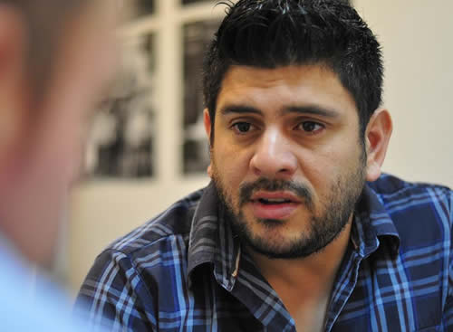

Real Chubut - Agencia de Noticias


Ante el Consejo Federal Pesquero, Gilardino presentó la novedosa propuesta de Chubut sobre manejo sustentable del langostino

Fue este viernes en Buenos Aires donde el funcionario fue acompañado por empresarios de la pesca y representantes de las cámaras. “El apoyo de Das Neves ha sido clave para la recuperación de nuestro sector” dijo el referente de la Cámara Pesquera de Chubut (CAPECH).
Luego de la reunión que esta semana encabezó en Rawson el gobernador Mario Das Neves y tal como estaba previsto, el secretario de Pesca de la provincia, Alberto Gilardino, presentó este viernes ante el Consejo Federal Pesquero, que se reunió en Buenos Aires, el novedoso plan de manejo sustentable del langostino, que el Gobierno del Chubut elaboró junto a los representantes del sector.
Gilardino entregó la innovadora propuesta en compañía de representantes del sector de la pesca de Chubut y entre los que concurrieron al encuentro estuvo Christian Córdoba Canosa, de la Cámara Pesquera de Chubut (CAPECH), quien destacó que “el fuerte apoyo del gobernador Mario Das Neves, ha sido clave para la recuperación de nuestro sector en Chubut”.
El Consejo Federal Pesquero reúne a las autoridades nacionales del sector como así también a todas las provincias argentinas que tienen litoral marítimo, y en esta oportunidad este encuentro fue coordinado personalmente por el subsecretario de Pesca de la Nación, Tomás Gerpe.
Gilardino presentó la propuesta de Chubut acompañado por Christian Córdoba Canosa, de CAPECH (Cámara Pesquera de Chubut), y por referentes de la Cámara Argentina Patagónica de Industrias Pesqueras (CAPIP), la Cámara de Armadores de Pesqueros y Congeladores de la Argentina (CAPeCA), la Asociación de Pesca Artesanal y la Flota Amarilla de Puerto Rawson.
CINCO PUNTOS CENTRALES
Finalizada la reunión, Gilardino explicó que “el Consejo Federal Pesquero ha decidido reactivar la Comisión de Seguimiento del Recurso Langostino, y hoy hemos celebrado la primera reunión, con el propósito de diagramar políticas específicas de ordenamiento de la pesquería”, señaló, y agregó: "fue una reunión constitutiva, vinieron las autoridades del Instituto Nacional de Investigación y Desarrollo Pesquero (Inidep), hicieron una demostración técnica de varios sectores, de los lugares donde se está pescando y demás datos estadísticos, sumamente valiosos y necesarios para diseñar una política integral para el sector”.
“Hacía falta que esta comisión se pusiera operativa porque para nosotros es primordial y fundamental, dado que el langostino es el principal elemento que tenemos en la provincia como recurso. Por ello presentamos una propuesta con cinco puntos que se habían charlado previamente en Rawson en la reunión del martes con el gobernador Mario Das Neves”, indicó el funcionario provincial.
Gilardino especificó que “la propuesta está desarrollada en base a cinco puntos centrales: armar un plan de manejo interjurisdiccional; ampliar una zona de exclusividad que tiene la flota fresquera de la provincia, con los buques hasta 21 metros, entendiendo que hay medio grado más que podríamos operar con exclusividad; también la no incorporación de nuevos buques congeladores tangoneros a la flota hasta tanto no se resuelva este plan interjurisdiccional de manejo; una certificación de las capturas que tiene la flota histórica de la provincia y la actual; y crear una comisión interjurisdiccional para fijar las normativas y la reglamentación para una certificación de captura de langostino que es algo que vienen trabajando las empresas y que le va a dar mayor valor al producto que se procesa en la provincia”.
El secretario de Pesca del Chubut destacó que “el gobernador Mario Das Neves tomó personalmente la iniciativa y encabezó la reunión esta semana en Casa de Gobierno en Rawson para definir esta novedosa propuesta, teniendo en cuenta fundamentalmente que el langostino es el principal recurso de la pesca de la provincia, y la pesca en Chubut es uno de los pilares de la economía. Tenemos que cuidar el recurso para que los actores no se vean perjudicados y puedan tener una previsibilidad jurídica y económica en el tiempo para seguir trabajando y creciendo en un ámbito ordenado para hacer inversiones", subrayó.
APOYO DE DAS NEVES AL SECTOR PESQUERO
A su turno, el referente de CAPECH (Cámara Pesquera de Chubut), y reconocido empresario del sector, Christian Córdoba Canosa, calificó la reunión como “muy importante” y destacó que los privados (Flota Amarilla, Flota Artesanal, y todas las plantas congeladoras de tierra) están apoyando la moción del gobernador Mario Das Neves: "es fundamental consensuar y llegar a buen puerto con los cinco puntos que hoy ha expuesto el secretario de Pesca para ser tratados. Consideramos que con un orden y un buen manejo conservaremos el recurso, la mano de obra y que las economías sean rentables para poder subsistir en el tiempo".
El empresario pesquero señaló que "vengo de una empresa casi en situación de cierre y hoy estoy en una posición tranquila y de exportación, somos una empresa recuperada", y subrayó que "en los últimos años no hemos tenido el apoyo de nadie como tenemos ahora del gobernador Das Neves y el secretario Gilardino".
Para finalizar, Córdoba Canosa dijo que "me dan ganas de seguir haciendo cosas y apuesto a ello porque desde lo empresarial no me siento solo ni abandonado, por el contrario me siento acompañado", concluyó.
PUBLICIDAD